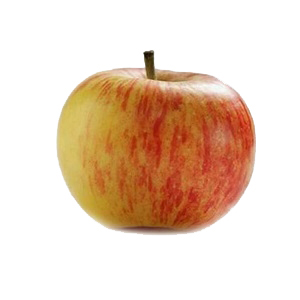
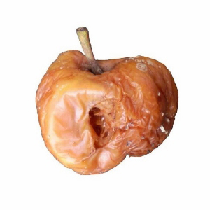

<!-- 
  FoodPopsUp.html
  
  Calvin Isch

  Purpose: A Program developed to run as an experiment on MTurk and in lab. This 
  was meant to test how hunger affects people's perception of the tasteyness of food.
-->


<!doctype html>

<html>
  <head>
    <title>Food Pops Up</title>
    <!-- Necessary imports from the folder. --> 
    <script src="https://ajax.googleapis.com/ajax/libs/jquery/1.11.1/jquery.min.js"></script>
    <script src="jspsych-5.0.3/js/jquery.min.js"></script>
    <script src="jspsych-5.0.3/js/jquery-ui.min.js"></script>
    <script src="jspsych-5.0.3/jspsych.js"></script>
    <script src="jspsych-5.0.3/plugins/jspsych-text.js"></script>
    <script src="jspsych-5.0.3/plugins/jspsych-single-stim.js"></script>
    <script src="jspsych-5.0.3/plugins/jspsych-survey-text.js"></script>
    <script src="jspsych-5.0.3/plugins/jspsych-html.js"></script>
    <script src="jspsych-5.0.3/plugins/jspsych-survey-likert.js"></script>
    <link href="jspsych-5.0.3/css/jspsych.css" rel="stylesheet" type="text/css"></link>
       <!-- This is needed for the progress bar-->
      <style>
        img {
          width: 300px;
        }
      </style>
  </head>
  <body>

    <!-- Needed for the progress bar-->
    <div id="jspsych-target"></div>
  </body>
  <script>

  // Turk information that is necessary for working with MTurk
  var turkInfo = jsPsych.turk.turkInfo();
  // workerID
  turkInfo.workerId
  // hitID
  turkInfo.hitId
  // assignmentID
  turkInfo.assignmentId

  // The consent page. Provides user information about their rights and requires consent before continuing
  // with the study.
  var consent_block = {
    type: "text",
    cont_key:"5",
    text: "<div id='consent'>" +
    "<p class='lead_right'>IRB Study #0804000155 (97-763)</p>" +
    "<h1>INDIANA UNIVERSITY INFORMED CONSENT FOR</h1>" +
    "<h2>Concepts and Percepts</h2>" +
     " <p>You are invited to participate in a research study of how what we have learned can influence how people think, act, and make decisions.  You were selected as a possible subject because you contacted our research team expressing interest in participating.  We ask that you read this form and ask any questions you may have before agreeing to be in the study.</p>" +
      "<p>The study is being conducted by Dr. Robert Goldstone in the Department of Psychological and Brain Sciences.</p>"+
    "<h3>STUDY PURPOSE</h3>"+
     " <p>The purpose of this study is to better understand the ways that people see objects can change as they learn new tasks.</p>"+
    "<h3>NUMBER OF PEOPLE TAKING PART IN THE STUDY:</h3>"+
     " <p>If you agree to participate, you will be one of approximately 15000 subjects who will be participating in this research.</p>"+
    "<h3>PROCEDURES FOR THE STUDY:</h3>"+
      "<p>If you agree to be in the study, you will be presented with several straightforward tasks to complete.  These tasks will include responding with key strokes to images displayed on a computer monitor and may involve learning what categories objects belong in, determining if objects are identical or related, and transferring what you learn about objects in one training task to a related task.</p>"+
      "<p>The entire session should take a maximum of 15 minutes. You may only participate in the experiment once.</p>"+
    "<h3>RISKS OF TAKING PART IN THE STUDY:</h3>"+
      "<p>Participation in this study involves a potential risk of loss of confidentiality. </p>"+
    "<h3>BENEFITS OF TAKING PART IN THE STUDY:</h3>"+
      "<p>An understanding of how people change the way they see the world as they learn can help us to find more efficient methods to teach information and develop technologies that increase the speed of learning. You benefit from this experience because you learn something about how an experiment is designed and conducted, what issues are of interest to cognitive scientists, and what kinds of group behaviors emerge when individuals try to reach their goals in an environment that consists largely of other individuals.</p>"+
    "<h3>ALTERNATIVES TO TAKING PART IN THE STUDY:</h3>"+
      "<p>An alternative to participating in the study is to choose not to participate.</p>"+
    "<h3>CONFIDENTIALITY</h3>"+
      "<p>Efforts will be made to keep your personal information confidential.  We cannot guarantee absolute confidentiality.  Your personal information may be disclosed if required by law. Your identity will be held in confidence in reports in which the study may be published and in databases in which results may be stored.  Organizations that may inspect and/or copy your research records for quality assurance and data analysis include groups such as the study investigator and his/her research associates, the IUB Institutional Review Board or its designees, and (as allowed by law) state or federal agencies, specifically the Office for Human Research Protections (OHRP), etc. who may want to access your research records. </p>"+
    "<h3>PAYMENT</h3>"+
      "<p>For participating in this study, you will receive a small payment of $0.40.</p>"+
    "<h3>CONTACTS FOR QUESTIONS OR PROBLEMS</h3>"+
      "<p>For questions about the study, contact the researcher Dr. Robert Goldstone at (812) 855-4853.  </p>"+
      "<p>For questions about your rights as a research participant or to discuss problems, complaints or concerns about a research study, or to obtain information, or offer input, contact the IU Human Subjects Office at (812) 856-4242 or by email at irb@iu.edu </p>"+
    "<h3>VOLUNTARY NATURE OF STUDY</h3>"+
      "<p>Taking part in this study is voluntary.  You may choose not to take part or may leave the study at any time.  Leaving the study will not result in any penalty or loss of benefits to which you are entitled and you will be compensated for your time up to that point.  Your decision whether or not to participate in this study will not affect your current or future relations with the investigator(s).</p>"+
    "<h3>SUBJECT'S CONSENT</h3> "+
     "<p>By moving on to the next page, you acknowledge that you have read and understand the above information, that you are 18 years of age or older, and give your consent to participate in our internet-based study.</p>"+
      "<p>Print this page if you want a copy for your records.</p>" +
      "<p>Form date: October 5, 2017</p>"+
    "<h3> Press the '5' Key to continue, by doing so you agree to take part in the study.</h3>" +
    "</div>"
  };


  // Welcome message Block
  var welcome_block = {
  type: "text",
  text: "<p>Welcome! In this experiment you will be shown images of objects and we will ask you some questions about them.</p>\
	<p>Press any key to begin.</p>"
  };

  // Instructions for Likert
  var likert_instructions = {
  type: "text",
  text: "<p>In the next part of the experiment, we are going to ask you some questions about \
	how hungry you are currently feeling. To answer the questions, click the bubble to indicate your response.</p>\
	<p>Press any key to continue.</p>"
  };

  // Instructions for FoodMorph test
  var morph_instructions = {
  type: "text",
  cont_key:'mouse',
  text: "<p>In the next section of the experiment, you will see different images that look like the pictures below. " +
		  " After each image is presented you will press either the Q key or the P key on your keyboard.</p> " +
		  " <div class='images'>" +
		  " <div class='left center-content'>" +
      " <p class='small'><strong>Press the Q key if it looks more like this </strong></p></div>" +
		  " <div class='right center-content'>" +
		  " <p class='small'><strong>Press the P key if it looks more like this</strong></p></div>" +
      " <p> </p> <p> </p> </div> " +
		  " <p>Click the mouse to begin.</p>"
  };

  // Instructions for the break
  var break_instructions = {
  type: "text",
  cont_key:"mouse",
  text: "<p>If you would like to, take a quick break to rest your eyes.</p>" +
	      "<p>Press THIS with the Mouse when you are ready to continue.</p></div>"
  };


  // The various selection points for the survey Likert
  var scale_1 = [["Not at all hungry", "Not very hungry", "Neutral", "Somewhat hungry", "Very hungry"],
			          ["Very weak", "Somewhat weak", "Neutral", "Somewhat strong","Very strong"],
                ["None", "A small amount", "A medium amouint", "A large amount","A very large amount"],
                ["Empty", "Mostly empty", "Half full", "Mostly full","Completely full"]];

  // Likert Questions
  var likert_block = {
      type: 'survey-likert',
      questions: ["How hungry do you feel right now?", 
				          "How strong is your desire to eat right now?",
                  "How much food could you eat right now?",
                  "How full does your stomach feel right now?"],
      labels: scale_1,
  };

  // Enforces all questions be filled before leaving Likert Page
  var loop_likert = {
    timeline: [likert_block],
    loop_function: function(data){
      var likert_response = jsPsych.data.getTrialsOfType('survey-likert');
      var likert_data = [];
      for (i = 0; i < likert_response.length; i++){
        likert_data.push(JSON.parse(likert_response[i].responses));
      }
      if(likert_data[likert_data.length - 1]["Q0"] == -1 || 
          likert_data[likert_data.length - 1]["Q1"] == -1 || 
          likert_data[likert_data.length - 1]["Q2"] == -1 || 
          likert_data[likert_data.length - 1]["Q3"] == -1){
          console.log("Please fill in all responses");
          console.log(num_blocks / 2);
          return true;
      } else {
          return false;
      }
    }
}

    // each of the different categories we have for our foodmorph
    var all_pairs = ["apple", "boogerbear", "carrotfinger", "cookiemit", "earpop", 
                    "gillfruit", "mealfries", "nutbrain", "pretzelpoop", "slugclair", "wormcornx",
                    "bananaScope", "CheeseChest", "CookAid", "cucusock", "DoughHat", "DoughWood",
                    "KiBoard", "LetBall", "rockmellon", "spongza", "Towie", "Tupperstry"]

   // randomizes the list to ensure random order
    var all_pairs_rand = jsPsych.randomization.repeat(all_pairs, 2); 
    
    // A constant or the number of pairs that updates later loops
    var num_blocks = all_pairs_rand.length;

    // Arrays for storing the pics, and the targets
    var all_stimuli = [];
    var left_targets = [];
    var right_targets = [];
    
    // fills the arrays with all of the intermediary pics and their respective targets
    for (var j = 0; j < num_blocks; j++) {
      to_add = [];
      var x;
      if((Math.random() * 10) > 5) { 
          left_targets.push('img/'+ all_pairs_rand[j]+'00.jpg');
          right_targets.push('img/'+ all_pairs_rand[j]+'010.jpg');
          x = "left";
      } else {
          right_targets.push('img/'+ all_pairs_rand[j]+'00.jpg');
          left_targets.push('img/'+ all_pairs_rand[j]+'010.jpg');
          x = "right";
      }
      for (var i = 1; i<= 9; i++) {
        to_add.push({ stimulus: 'img/' + all_pairs_rand[j]+ '0' +i+'.jpg', data: { response: i,  the_00:x}} );
      } 
      to_add = jsPsych.randomization.repeat(to_add, 1);
      all_stimuli.push(to_add);
    }

    // Array for storing all testblocks run with Single Stim Plugin
    var all_test_blocks = [];

    // Creates all of the testb locks and expected responses/prompts for the FoodMorph
    for (i = 0; i <= (num_blocks - 1); i++) {
      var left = left_targets[i];
      var right = right_targets[i];
      all_test_blocks.push({
        type: 'single-stim',
        choices: ['P', 'Q'],
        timing_post_trial: 500,
        prompt: "<div class='left center-content'> </img>" +
                "<p class='small'><strong>Press the Q key</strong></p></div>" +
                "<div class='right center-content'></img>" +
                "<p class='small'><strong>Press the P key</strong></p></div>" ,
        on_finish: function(data){
          var blendNum = data.response;
          var left = data.the_00;
          jsPsych.data.addDataToLastTrial({blendNum: blendNum, is_tasty: left});
        },
        timeline: all_stimuli[i]
      })
    } 


  // The questions subjects will fill in
  var page_1_questions = [
    "How many hours (to the nearest 0.5) has it been since you last ate?", 
    "How many hours (to the nearest 0.5) do you think it will be until you next eat?"];

  // Puts them in a survey format
  var survey_block = {
      type: 'survey-text',
      questions: page_1_questions
  };

  // Ensures the user doesn't leave page before filling in every question
  var loop_survey = {
    timeline: [survey_block],
    loop_function: function(data){
      var survey_response = jsPsych.data.getTrialsOfType('survey-text');
      var survey_data = [];
      for (i = 0; i < survey_response.length; i++){
        survey_data.push(JSON.parse(survey_response[i].responses));
      }
      if(survey_data[survey_data.length - 1]["Q0"] == "" ||
         survey_data[survey_data.length - 1]["Q1"] == ""){
          console.log("Please fill in all answers");
          return true;
      } else {
          return false;
      }
    }
}

  // Instructions on a debrief block
  var debrief_block = {
    type: "text",
    cont_key:"mouse",
    text: "<p>You finished everything!!! Thank you for your contribution to science! </p>" +
          "<p>Press THIS with the Mouse you are ready to complete the experiment.</p></div>"
  };

  // Preloads images into browser memory.
  var preload_These = left_targets.concat(right_targets);
  jsPsych.pluginAPI.preloadImages(preload_These, function(){ startExperiment(); });

  // The experiment timeline array, pushes the previous variables in order to be executed
  var timeline = [];
  timeline.push(consent_block);
  timeline.push(welcome_block);
  timeline.push(likert_instructions);
  timeline.push(loop_likert);
  timeline.push(loop_survey);
  timeline.push(morph_instructions);
  // Ensures all of the stimuli have been presented with a break in the middle.
  for (i = 0; i < num_blocks / 2; i++){
    timeline.push(all_test_blocks[i])
  } 
  timeline.push(break_instructions);
  for (i = num_blocks / 2; i < num_blocks; i++) {
    timeline.push(all_test_blocks[i])
  }
  timeline.push(debrief_block);

  

  // starts the experiment
  function startExperiment(){
    jsPsych.init({
      display_element: $('#jspsych-target'),
      timeline: timeline,
      show_progress_bar: true,
      on_finish: function() {
        jsPsych.data.displayData();
      }
    });
  }
  
</script>
</html>